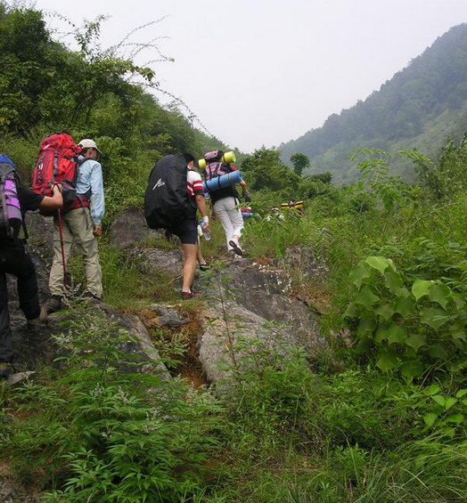
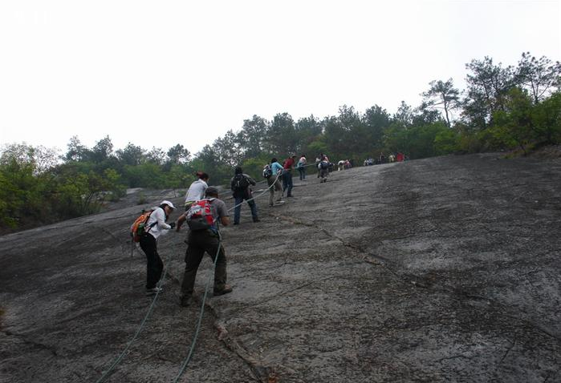
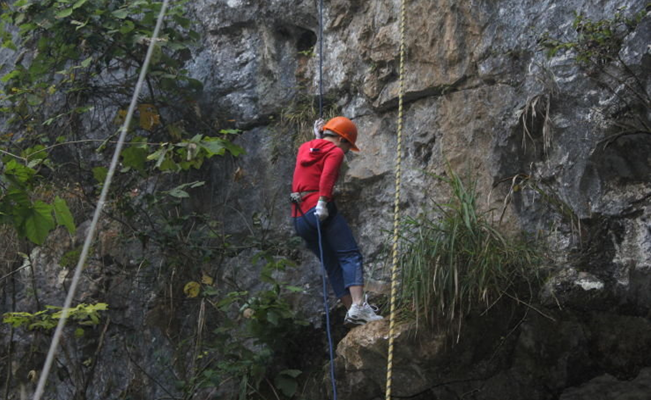
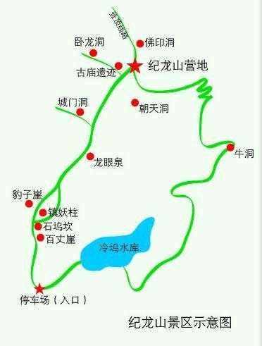

发信人: Julylovingu (小七), 信区: outdoor
标 题: <第二弹>纪龙山召集帖
发信站: 饮水思源 (2014年03月08日00:00:56 星期六)
浙江桐庐纪龙山，与全国四十佳旅游胜地之一“瑶琳仙境”隔江相望，与天斗地漏景区相
通，垂云通天河相连。纪龙山为典型喀斯特地貌，海拔818米，景区内常年云蒸雾绕，怪石
嶙峋，险象环生；有镇妖柱、镇妖锁、古寺庙遗址、古台阶、古村落、云海日出、豹子崖
、城门洞、卧龙洞等景点。
 screen.width - 200){this.width = screen.width - 200}">
 screen.width - 200){this.width = screen.width - 200}">
 screen.width - 200){this.width = screen.width - 200}">
登山攀岩、徒步穿越、篝火晚会、帐篷野营、溶洞探秘、高空速降、野外生存，都有可能
成为您纪龙山之行的难忘经历。
活动时间：3月14日（周五）晚19：00出发，16日（周日）下午返回~
活动类型：徒步&登山&探洞&速降&篝火&烧烤
活动强度：中等偏下
费用：
总计：会员：290/人 非会员：320/人（多退少补）
营地费用(速降+溶洞探险+篝火费用+营地租金+向导费用+营地保险+第三天中餐）：120元
/人
装备费用：50元/人
户外险：10/人
车费：110/人
活动行程：
第一天
19:00—庙门出发（车上做自我介绍及破冰游戏，补充睡眠）
23:30--到达山脚 搭帐篷睡觉
第二天
06:00——起床 早饭
07：30----整包结束，出发开始登山，途经传说中的豹子崖，一段看起来比较陡峭的崖壁
，天气情况好我们可以攀绳索而上，体验下短暂惊险刺激的飞虎队生涯，还会途经古台阶
，行程大约两个小时。
09：30——到达营地，搭帐篷，整理装备，准备进行最刺激的——高空速降（挑战自我，
没什么可怕的……）
12：30——返回营地，午饭，小歇片刻
14：00——探洞，体验黑暗中的那片静谧
17：00——回到营地休息，开始晚餐
19：00——篝火晚会+烧烤，大家尽兴聊天吃肉~
21：00——休息，住帐篷，看月亮、数星星……
第三天
06：30——起床，早餐。天气好的话，可以看日出~
08：30——有兴趣的话，我们可以尝试探第二个洞
11：00——中餐
13：00——打包返回上海
17：30——安全抵达学校
路线图：
 screen.width - 200){this.width = screen.width - 200}">
注意事项：
1.以上行程为基本行程，领队有权根据天气、队员状态等情况调整活动计划，不承担由此
造成的损失和责任。
2.野外活动不同于一般旅游，参加活动的队员须听从领队和向导的组织安排，严禁野外用
火吸烟，严禁擅自离队，所有活动安全第一，对于无视指挥所造成的后果由自己负责。
3.关于速降和探洞
速降及探洞有一定的难度, 我们会在星期三中午进行一次校内培训，现场时提供专业教练
及领队现场指导，希望每一个参与的队员都能够认真听取活动要求并完成，不要做其他危
及到团队及自身安全的行为；出发前系紧鞋带、皮带，不要穿开衫，穿牛仔裤，女性不应
穿裙子，长发结辫盘起（最好戴帽子）；不要携带无关物品(一定要带的物品要放在合适位
置，防止掉落)；滑轮、D性锁扣、8字环、安全带、手套、头盔等检查妥当；如果恐高、心
脏病等疾病，将不适合参与此类户外活动；其他具体要求，将在现场教授给每一位参与的
队员，届时请仔细聆听。探洞时，最深处可能会有积水，所以记得多带一双袜子，衣服裤
子也最好多带一套。
4.返程路上，记得带点吃的。
5.协会提供的装备有：帐篷、睡袋、防潮垫、锅、炉头和气罐。其他装备请自行根据自己
的情况准备。
6.准备会或者技术培训安排由领队通知，请各位出席，请各位根据自己时间安排考虑。
报名方式：
同去网报名 http://tongqu.me/index.php/activity?id=2863
请留意最近协会召集短信，BBS中outdoor版，人人主页和野协召集帖。
有疑问请与18817556104 闫同学联系（电话联系）或发送短信至张同学13817369114。
想过一个不一样的周末吗，想体验刺激的极限运动吗，那就和野协一起去纪龙山吧!!! We
are here, we are waiting!!!
报名截止时间：周日晚上（3月9号）21:00。
screen.width - 200){this.width = screen.width - 200}">
--
※ 来源:·饮水思源 bbs.sjtu.edu.cn·[FROM: 211.80.60.22]
|